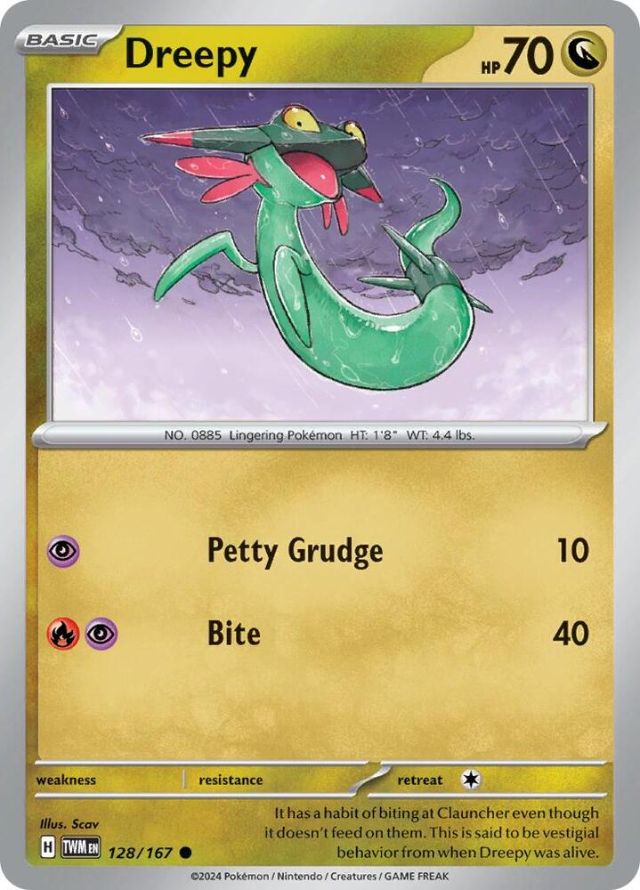
x4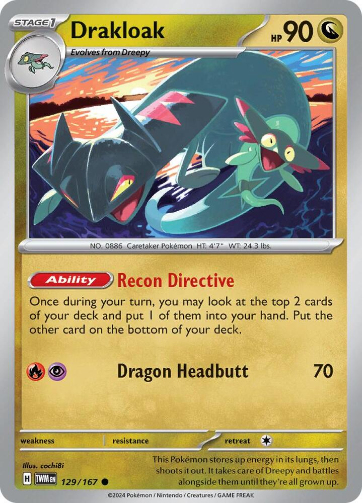
x4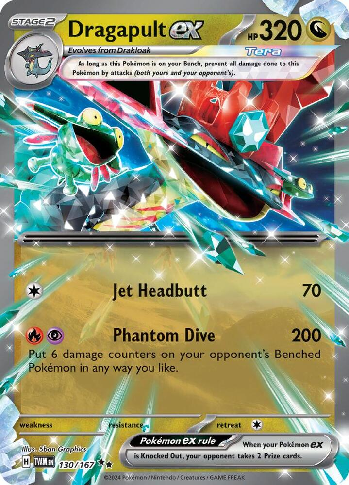
x3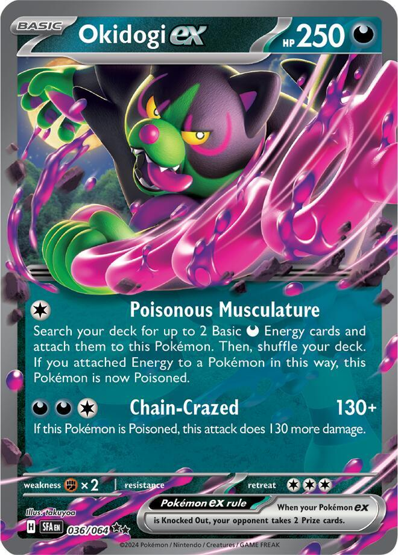
x3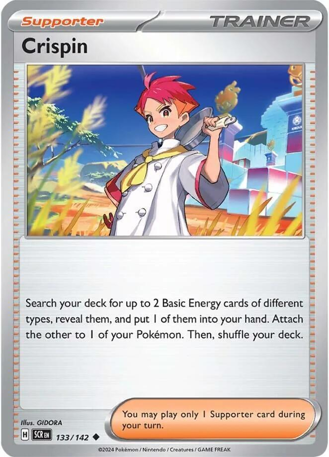
x4 x3
x3 x3
x3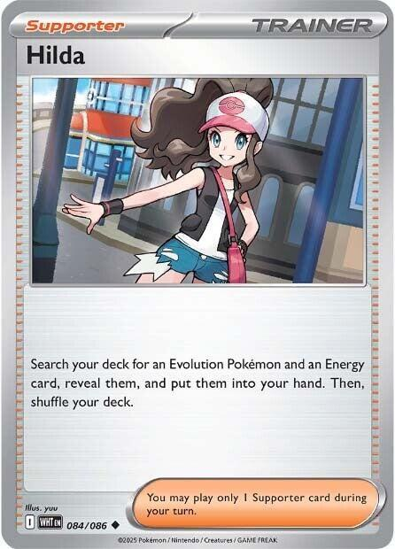
x2![Boss's Orders [Ghetsis]](./assets/654453_bosss-orders-ghetsis.jpg) x2
x2 x3
x3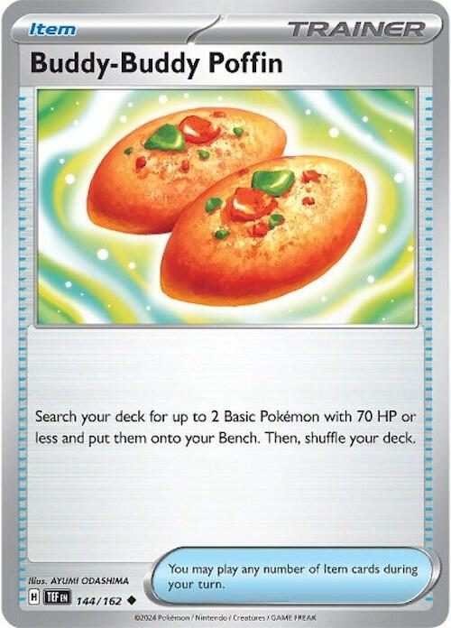
x3 x2
x2 x2
x2
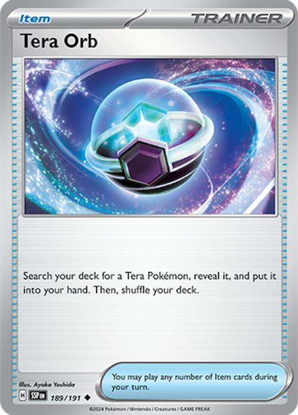
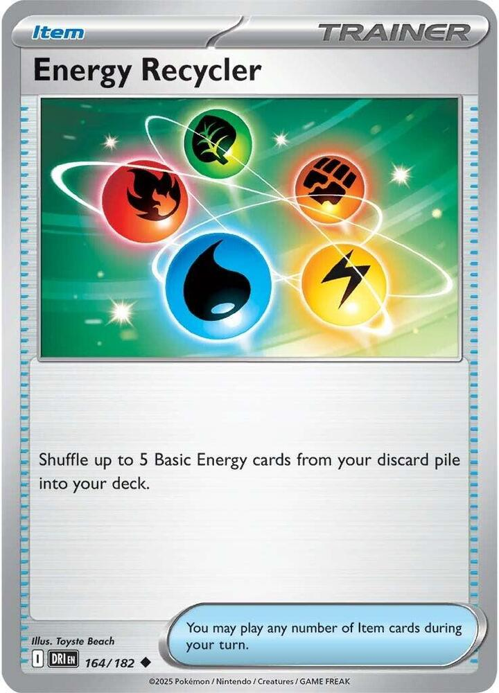
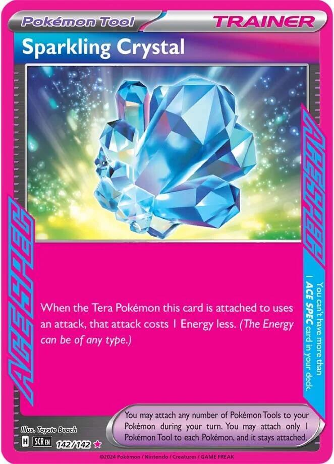
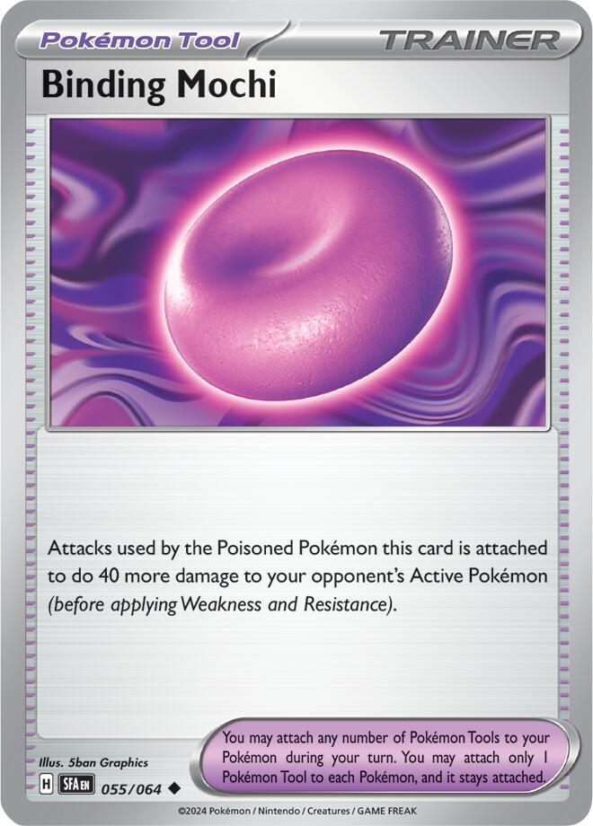
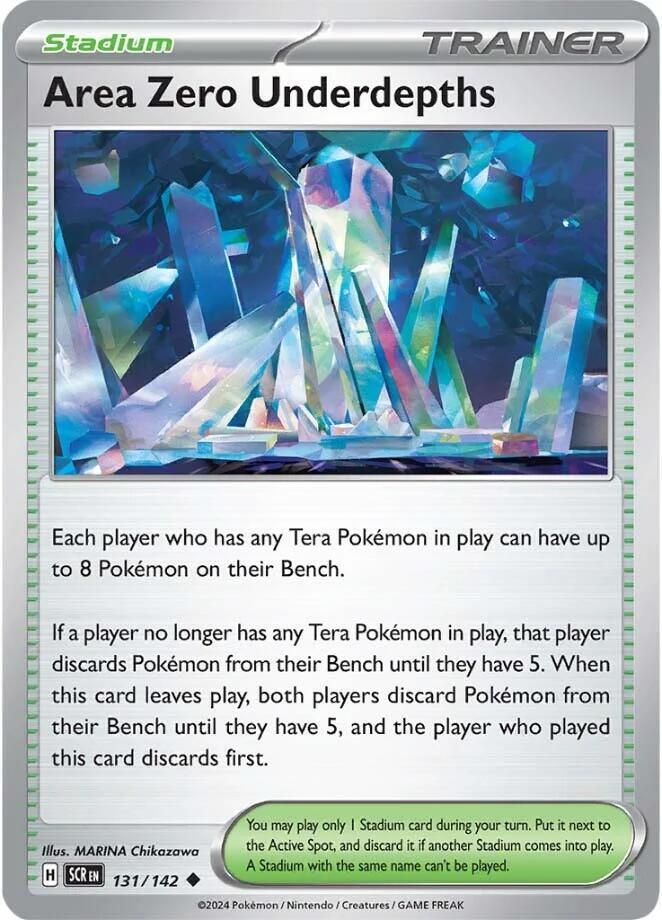
x2 x5
x5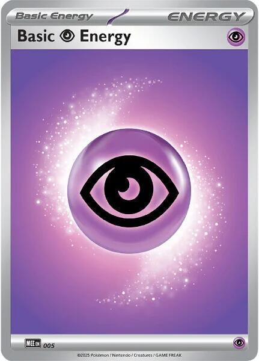
x5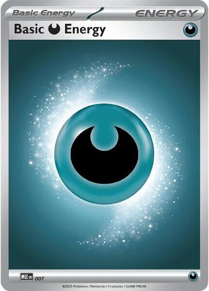
x5 Dragon Dogs
Dragon Dogs 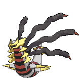
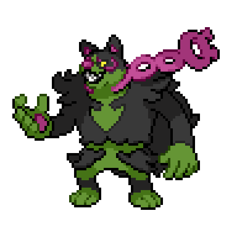
The TCG Live list · Dragapult ex spreads the counters, Okidogi ex cashes them in
← back to all decks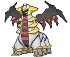
Two attackers, two jobs. Dragapult ex's _Phantom Dive_ is 200 to the Active and six damage counters anywhere on their Bench. Okidogi ex's _Chain-Crazed_ is 300 to the Active with a Binding Mochi attached. Okidogi kills every Mega up to 300 HP on its own, and Dragapult kills none. Together they reach almost all of the rest, because sixty counters is exactly the gap between 300 and the big Megas.
Dive the Bench, Dog the front. Put the Dive's six counters on the benched ex you plan to Boss next. Next turn, Boss it up and Okidogi hits it for 300. Six counters plus 300 is 360, and every Mega from 310 to 360 HP dies to that line. That leaves four above it: Mega Dragonite ex and Mega Feraligatr ex at 370, and Mega Venusaur ex and Mega Emboar ex at 380. The Tera rule protects their benched Dragapult from damage, not from counters, so the mirror works the same way.
The dog needs one attachment for the whole game. _Poisonous Musculature_ costs one Colorless, searches two Basic Darkness Energy out of the deck, attaches both to Okidogi, and Poisons it. That is the full _Chain-Crazed_ cost, and the Poison is what turns 130 into 260 and switches the Mochi on. Every attachment after that goes to the Dragapult line.
Drakloak is still the engine. _Recon Directive_ looks at two cards a turn per Drakloak, keeps one, and bottoms the other. Four copies, the same count as Steve's list, and Poke Pad, Dawn, and Hilda all find one. Crystal Dragons has the full case for evolving through it on purpose.
Rare Candy buys a turn. Steve's list runs no Candy and Dives on turn three. Two Candy here put a Dragapult ex into play on turn two off a Dreepy benched the turn before. With two Energy on that Dreepy, or one and the Crystal, it Dives the turn it arrives.
| Attacker | Cost | Damage | Needs first |
|---|---|---|---|
| Dragapult ex, _Phantom Dive_ |  , or either one with Sparkling Crystal , or either one with Sparkling Crystal | 200, plus 6 counters on their Bench | Two Energy through the evolution line |
| Okidogi ex, _Chain-Crazed_ |  | 260 Poisoned, 300 with Binding Mochi | One turn of _Poisonous Musculature_ |
| Both, one turn apart | 500 to one Active, or 360 to a Bossed target | A Dive, then a Boss's Orders |

x4
x4
x3
x3
x4x3x3
x2x2x3
x3x2x2




x2x5
x5
x5Pokémon (14)
| Qty | Card | Set | Number | Reg |
|---|---|---|---|---|
| 4 | Dreepy | Twilight Masquerade | 128 | H |
| 4 | Drakloak | Twilight Masquerade | 129 | H |
| 3 | Dragapult ex | Twilight Masquerade | 130 | H |
| 3 | Okidogi ex | Shrouded Fable | 036 | H |
Trainers — Supporters (14)
| Qty | Card | Set | Number | Reg |
|---|---|---|---|---|
| 4 | Crispin | Stellar Crown | 133 | H |
| 3 | Lillie's Determination | Mega Evolution | 119 | I |
| 3 | Dawn | Phantasmal Flames | 087 | I |
| 2 | Hilda | White Flare | 084 | I |
| 2 | Boss's Orders | Mega Evolution | 114 | I |
Trainers — Items (13)
| Qty | Card | Set | Number | Reg |
|---|---|---|---|---|
| 3 | Poke Pad | Perfect Order | 081 | J |
| 3 | Buddy-Buddy Poffin | Temporal Forces | 144 | H |
| 2 | Rare Candy | Mega Evolution | 125 | I |
| 2 | Night Stretcher | Shrouded Fable | 061 | H |
| 1 | Ultra Ball | Mega Evolution | 131 | I |
| 1 | Tera Orb | Surging Sparks | 189 | H |
| 1 | Energy Recycler | Destined Rivals | 164 | I |
Trainers — Tool & Stadium (4)
| Qty | Card | Set | Number | Reg |
|---|---|---|---|---|
| 1 | Sparkling Crystal | Stellar Crown | 142 | H |
| 1 | Binding Mochi | Shrouded Fable | 055 | H |
| 2 | Area Zero Underdepths | Stellar Crown | 131 | H |
Energy (15)
| Qty | Card | Set | Number | Reg |
|---|---|---|---|---|
| 5 | Basic Fire Energy | Mega Evolution Energies | 002 | - |
| 5 | Basic Psychic Energy | Mega Evolution Energies | 005 | - |
| 5 | Basic Darkness Energy | Mega Evolution Energies | 007 | - |
14 + 14 + 13 + 4 + 15 = 60. ✓
Basics: 7 (4 Dreepy, 3 Okidogi ex). You mulligan 40% of opening hands, which is the bottom of the playable band; Test and Tune watches it. Sparkling Crystal is the ACE SPEC. The printings above are the regular ones; the Live list runs a few alternate arts, and the card text is the same.

Memorize this section. Everything below it is explanation.
| Attack | Cost | Damage | One-shots at full HP |
|---|---|---|---|
| Okidogi ex, _Chain-Crazed_, Poisoned, with Binding Mochi | | 300 | Mega Kangaskhan ex 300, N's Zoroark ex 280, Team Rocket's Mewtwo ex 280, Gengar ex 280, Mega Absol ex 280, Mega Darkrai ex 280, and every Mega below them |
| Okidogi ex, _Chain-Crazed_, Poisoned | | 260 | Raging Bolt ex 240, Terapagos ex 230, Hop's Zacian ex 230, Teal Mask Ogerpon ex 210, Lillie's Clefairy ex 190 |
| Okidogi ex, _Chain-Crazed_, not Poisoned | | 130 | Slowking 120 and the 70 HP Basics. The Mochi does nothing without the Poison. |
| Dragapult ex, _Phantom Dive_ | | 200, plus 6 counters on their Bench | Metagross 180, Hariyama 150, Toucannon 150, Alakazam 140, Dudunsparce 140, Dhelmise 140, Slowking 120, Seaking 110, Dipplin 90, Froslass 90 |
| Dragapult ex, _Jet Headbutt_ | | 70 | Dreepy, Drilbur, Duskull, Dwebble, N's Zorua, Cynthia's Gible, and any 70 HP Basic |
| Drakloak, _Dragon Headbutt_ | | 70 | The only damage in the deck that is not from an ex. It matters against Crustle and nowhere else. |
What the Dive's counters buy the dog. Okidogi's 300 falls short of every Mega above 300 HP. Counters placed on a benched target the turn before make up the difference, and Boss's Orders brings it up.
| Target | HP | Counters it needs before a 300 Okidogi |
|---|---|---|
| Dragapult ex, Blaziken ex, Marnie's Grimmsnarl ex | 320 | 2 |
| Mega Lopunny ex, Cynthia's Garchomp ex | 330 | 3 |
| Mega Excadrill ex, Mega Lucario ex | 340 | 4 |
| Mega Gengar ex, Mega Greninja ex, Mega Chandelure ex | 350 | 5 |
| Mega Gardevoir ex, Mega Charizard X ex, Mega Charizard Y ex | 360 | 6, the whole Dive |
| Mega Dragonite ex, Mega Feraligatr ex, Mega Venusaur ex, Mega Emboar ex | 370-380 | More than one Dive's worth. Dive the Active for 200 instead, then Okidogi for 300. |
Counters are not attack damage. They ignore Weakness, Resistance, and the Tera Bench rule. Two things stop them. The Hide 'n' Sneak Ability on Shuppet, Banette, Poltchageist, and Sinistcha blocks every effect of your attacks, and Battle Cage keeps counters off both Benches while it stands. Area Zero knocks the Cage off.
Your HP: Dragapult ex 320, Okidogi ex 250, Drakloak 90, Dreepy 70. Dragapult ex has no Weakness, and on your Bench it takes no damage from attacks. Okidogi ex is Weak to Fighting and retreats for three.
A Poisoned Okidogi is a 230 HP Pokémon for one exchange. Poison is one damage counter at every Pokémon Checkup, which happens after your turn and again after theirs. From the turn you use _Poisonous Musculature_, it has lost 10 before they attack and 10 more after. Any attack for 230 or more kills it, and a Knock Out by Poison still gives up two Prizes.
| Their attack | Damage | What it kills |
|---|---|---|
| Mega Excadrill ex, _Maximum Drilling_ with 5 Energy | 330 | Either attacker. At three or four Energy it is 200. Count the Energy on the Mega before you leave anything in front of it. |
| Hariyama, _Wild Press_ | 210, doubled to 420 into Okidogi | Okidogi. Dragapult survives on 110. |
| Mega Lucario ex, _Mega Brave_ | 270, doubled to 540 into Okidogi | Okidogi. Dragapult survives on 50. |
| Cynthia's Garchomp ex, _Draconic Buster_ | 260, doubled to 520 into Okidogi | Okidogi. Dragapult survives on 60. |
| Mega Gengar ex, _Void Gale_ | 230 | A Poisoned Okidogi, exactly. Dragapult survives on 90. |
| Dragapult ex, _Phantom Dive_ | 200, plus 6 counters | A Poisoned Okidogi survives on 30. Their counters kill a Dreepy or a Drakloak over two Dives. |
| Lillie's Clefairy ex, _Full Moon Rondo_ under Fairy Zone | 20 plus 20 per Benched, doubled into a Dragon | Dragapult ex at five a side. Fairy Zone reads Dragon; Okidogi is Darkness and takes Rondo flat. |
| Dusknoir, _Cursed Blast_ (Ability) | 13 counters | Drakloak and Dreepy. Okidogi takes 130 and lives. |
Dragapult ex and Okidogi ex pay two apiece, and those are your only attackers. Against an ex deck the trade is even, and the Dive's counters make each of your Knock Outs cheaper than theirs. Against a single-prize deck you need six Knock Outs, and a Dive that kills the Active and a benched Basic in one attack is two of them.
| By | Cards seen | Dragapult ex, or a card that finds it | Okidogi ex, or a card that finds it | Rare Candy | Sparkling Crystal | Binding Mochi |
|---|---|---|---|---|---|---|
| Turn 1 | 8 | 79% | 65% | 25% | 13% | 13% |
| Turn 2 | 9 | 83% | 70% | 28% | 15% | 15% |
| Turn 3 | 10 | 86% | 74% | 31% | 17% | 17% |
| Turn 4 | 11 | 89% | 78% | 34% | 18% | 18% |
Ten cards find a Dragapult ex: the three copies, Ultra Ball, Tera Orb, three Dawn, and two Hilda. Seven find an Okidogi ex: the three copies, Ultra Ball, and three Dawn. Poffin cannot reach 250 HP, Poke Pad cannot see a Rule Box, and Hilda reads _Evolution Pokémon_. These numbers count only the draw, so every Recon Directive and every Lillie's pushes them higher. At least one Dragapult ex is in the Prizes 28% of games, and so is at least one Okidogi ex.
The opening seven holds a Dreepy or a Poffin 60% of the time, and a card that puts a Dreepy on the Bench 86% of the time. When you do have a Basic, a third of hands start Okidogi with no Dreepy, and that is a fine start; see game plan 2.

 1
1 legal (Reg H)Bite (40)
legal (Reg H)Bite (40)Four copies, 70 HP, and its job is becoming a Drakloak or, with Rare Candy, a Dragapult ex. Bench two on turn one: Poffin fetches two, Poke Pad and Dawn fetch one each. The Energy you attach to a Dreepy is Energy on the future Dragapult, so the first attachment of the game goes here unless Okidogi is starting its turn-one plan.
Full entry in Crystal Dragons.
1legal (Reg H)Dragon Headbutt (70)The engine. 90 HP, Stage 1, and _Recon Directive_: once during your turn, look at the top two cards of your deck, put one into your hand, and put the other on the bottom. Four copies. With Rare Candy in the list, the rule is to Candy one Dreepy into Dragapult and evolve the rest into Drakloak. Candying every Dreepy leaves you a fast attacker and no engine behind it.
The fifteen Energy make Recon Directive better than it looks on paper. The Energy you do not want this turn goes to the bottom, not back into the draw.
Full entry in Crystal Dragons.
 1legal (Reg H)Jet Headbutt (70)Phantom Dive (200) - Put 6 damage counters on your opponent's Benched Pokémon in any way you like.
1legal (Reg H)Jet Headbutt (70)Phantom Dive (200) - Put 6 damage counters on your opponent's Benched Pokémon in any way you like.Stage 2 from Drakloak. Gives up 2 Prize cards. 320 HP, Dragon, Tera, Retreat 1, and no Weakness. Three copies.
_Phantom Dive_ is for 200, then six damage counters anywhere on their Bench. In this deck the counters have one standing job: set up the next Okidogi Knock Out. Six counters on a benched Mega is a Mega that dies to one _Chain-Crazed_. When nothing on their Bench is worth setting up, kill whatever small body the counters can reach.
_Jet Headbutt_ is for 70. It is the attack when the Crystal is not down and only one Energy is attached.
The Tera rule. On your Bench, it takes no damage from attacks, yours or theirs. Damage counters still land.
Full entry in Crystal Dragons.

 Fighting ×23legal (Reg H)Poisonous Musculature - Search your deck for up to 2 Basic Darkness Energy cards and attach them to this Pokémon. Then, shuffle your deck. If you attached Energy to a Pokémon in this way, this Pokémon is now Poisoned.Chain-Crazed (130+) - If this Pokémon is Poisoned, this attack does 130 more damage.
Fighting ×23legal (Reg H)Poisonous Musculature - Search your deck for up to 2 Basic Darkness Energy cards and attach them to this Pokémon. Then, shuffle your deck. If you attached Energy to a Pokémon in this way, this Pokémon is now Poisoned.Chain-Crazed (130+) - If this Pokémon is Poisoned, this attack does 130 more damage.Basic. Gives up 2 Prize cards. 250 HP, Darkness, Weak to Fighting, Retreat 3, and no Ability.
_Poisonous Musculature_ is : search your deck for up to two Basic Darkness Energy and attach them to this Pokémon. If you attached any, it is now Poisoned. One attachment from hand turns into three Energy on the dog, which is the whole _Chain-Crazed_ cost, and the Poison is the damage bonus. It is an attack, so Okidogi has to be in the Active Spot to use it, and it ends your turn.
_Chain-Crazed_ is for 130, and 130 more while this Pokémon is Poisoned. 260 Poisoned. The Binding Mochi adds 40 to a Poisoned Pokémon's attacks, so 300 with it.
It is the early attacker that costs the Dragapult line nothing. Going second, Okidogi uses Musculature on turn one and swings for 260 or 300 on turn two, while the Dreepys evolve behind it. Going first, it Musculatures on turn two and swings on turn three, and every attachment after its first one goes to the Dreepys.
The Poison is the damage, and it is also a clock. Poisoned, it loses 20 HP a round to itself. Promote it when it has a Knock Out to take, not to hold the Active Spot. Game plan 3 has the rules.
Three copies. It is the one Pokémon here no Item except Ultra Ball can find.
Full entry in Curse Dogs.
 legal (Reg H)
legal (Reg H)The Energy Supporter, at four. Search your deck for up to two Basic Energy of different types, put one into your hand, and attach the other to one of your Pokémon. Fire to the Dragapult and Psychic to the hand is a Dive paid by one Supporter and next turn's attachment. It also lands Darkness on an Okidogi that has to Musculature this turn while your hand's attachment goes to the Dreepy.
Four copies because the Dive is two colors and the dog is a third. Crispin is the card that makes three colors in one deck work.
Full entry in Crystal Dragons.
 legal (Reg I)
legal (Reg I)The draw Supporter. Shuffle your hand into your deck and draw 6, or 8 while all six of your Prizes are still up. Three copies, one fewer than Steve's list, because Recon Directive does the everyday drawing. Play your Items first.
Full entry in Crystal Dragons.
 legal (Reg I)
legal (Reg I)Search your deck for a Basic, a Stage 1, and a Stage 2. Here that is Dreepy, Drakloak, and Dragapult ex, or Okidogi ex, Drakloak, and Dragapult ex when the dog is the missing piece. Three copies, because Dawn is one of only two cards that find an Okidogi and the only Supporter that does.
Full entry in Crystal Dragons.
 legal (Reg I)
legal (Reg I)Search your deck for an Evolution Pokémon and an Energy card, and put them into your hand. Two copies. It is a Dragapult ex and the color the Dive is missing, or a Drakloak and a Darkness for the dog. It cannot find Okidogi or Dreepy; both are Basics.
Hilda and Rare Candy are a two-card Dragapult on turn two. Hilda finds the Dragapult and a Fire, Candy puts it on the Dreepy that took a Psychic yesterday, and the Fire is today's attachment. It Dives the turn it arrives.
Full entry in Curse Dogs.
legal (Reg I)Switch in one of their Benched Pokémon to the Active Spot. Two copies, and it is the second half of every Dive-then-Dog turn. Boss the body the counters landed on, never a fresh one.
Full entry in Curse Dogs.
 legal (Reg J)
legal (Reg J)Search your deck for a Pokémon that doesn't have a Rule Box, for free. In this deck that is a Dreepy or a Drakloak, and nothing else. Three copies. Pad for a Drakloak when a Dreepy is already down, and for a Dreepy only when Poffin is gone.
Full entry in Curse Dogs.
legal (Reg H)Search your deck for up to two Basic Pokémon with 70 HP or less and put them onto your Bench. Dreepy is 70; Okidogi at 250 is out of range. Three copies, and turn one wants the first one for two Dreepy.
Full entry in Crystal Dragons.
legal (Reg I)Evolve a Basic straight into its Stage 2, skipping the Stage 1, as long as the Basic was in play since before this turn and it is not your first turn. Two copies. Candy one Dreepy for a turn-two Dragapult, and evolve every other Dreepy into a Drakloak. Two is enough for one fast Dragapult a game and a backup when the first is prized.
legal (Reg H)Put a Pokémon or a Basic Energy card from your discard pile into your hand. Two copies. The priority: a Knocked Out Okidogi or Dragapult ex, then a Drakloak, then an Energy.
Full entry in Crystal Dragons.
legal (Reg I)Discard two other cards from your hand, then search your deck for any Pokémon. One copy, and it is the only Item that finds an Okidogi ex.
The discard order. Throw spare Basic Darkness Energy first, because Musculature takes the dog's Darkness from the deck, not the hand. Then a Poffin when the Bench is set, then Dreepy once all four are accounted for. Never the Crystal, the Mochi, or the last Rare Candy; nothing in the deck brings a Trainer back.
 legal (Reg H)
legal (Reg H)Search your deck for a Tera Pokémon and put it into your hand. Here that is a Dragapult ex, for free. One copy.
Full entry in Crystal Dragons.
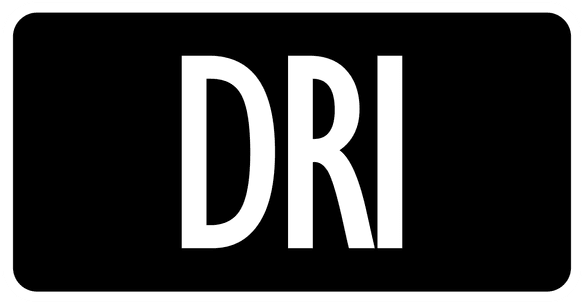
legal (Reg I)Shuffle up to 5 Basic Energy cards from your discard pile into your deck. One copy. Musculature searches the deck for Darkness, so a Darkness in the discard is invisible to the dog. Play Recycler after the first Okidogi goes down, and the next one finds its two Darkness again.
Full entry in Curse Dogs.
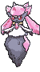
 ACE SPEC Rarelegal (Reg H)
ACE SPEC Rarelegal (Reg H)The ACE SPEC. When the Tera Pokémon this card is attached to uses an attack, that attack costs one Energy less. On Dragapult ex, Phantom Dive costs one Fire or one Psychic. It does nothing on Okidogi, which is not a Tera Pokémon.
Put it on the Dragapult you mean to keep. The one behind the Active is usually that Dragapult.
Full entry in Crystal Dragons.
legal (Reg H)Attacks used by the Poisoned Pokémon this card is attached to do 40 more damage to your opponent's Active Pokémon. One copy, and it goes on an Okidogi before its first _Chain-Crazed_. It turns 260 into 300, which is the difference on N's Zoroark ex, Team Rocket's Mewtwo ex, Gengar ex, and Mega Absol ex at 280 and Mega Kangaskhan ex at 300. It adds nothing to an Okidogi that is not Poisoned.
Full entry in Curse Dogs.
legal (Reg H)Eight Bench seats while you have a Tera Pokémon in play. Two copies. Four Drakloaks, a spare Dragapult, and a benched Okidogi fit with room left over. It also knocks off their Stadium.
When your last Dragapult leaves play, or when this card leaves play, you discard down to five, and you choose which. Only go past five when the sixth seat is winning the game.
Full entry in Crystal Dragons.
legalFive. Half of Phantom Dive's cost. With the Crystal down, a Dragapult Dives on Fire alone.
legalFive. The other half of the Dive, and Dreepy's _Petty Grudge_ if it ever comes to that.
legalFive, and they live in the deck. _Poisonous Musculature_ pulls two per use, so five is two full Musculatures and a half. When a Darkness is in your hand, attach it to the dog before the Musculature and keep the Fire and Psychic for the Dragapult.
Fifteen Energy is high on purpose. Most of it is never drawn: Musculature, Crispin, and Hilda pull it from the deck, and Recon Directive bottoms the copies you do not want. The deck spends Energy fast, too. Every Knocked Out Okidogi takes three with it, and every Dragapult takes two.
How 200, sixty counters, and 300 become six Prizes.
The loop. Dragapult Dives the Active for 200 and puts six counters on the benched ex you plan to take next. Next turn, Boss's Orders brings that ex up and Okidogi hits it for 300. Then Dragapult Dives again. Every two turns is two Knock Outs on two-Prize bodies, and three of those is the game.
Which attacker goes where. Dragapult sits in front when their Active dies to 200 or when their Bench needs counters. Okidogi goes in front when there is a 260 or 300 Knock Out to take. The one not attacking waits on the Bench, where Dragapult takes no damage from attacks and Okidogi takes no Poison.
Where the counters go. In order: a benched ex you can Boss and finish next turn, then any benched body the six counters kill outright, then a Drakloak or Stage 1 that runs their engine. Spreading twenty across three healthy bodies wastes the Dive.
Two Dragapults, always. The second one evolves while the first one fights. With Okidogi covering a turn, the second Dragapult has time to arrive with its Energy already on it.
Two openings, and the coin flip picks between them.
Going second, Okidogi Active. Attach any Energy to Okidogi, Poffin two Dreepy, and use _Poisonous Musculature_. On turn two it swings for 260, or 300 with the Mochi, and your turn-two attachment goes to a Dreepy. This is the fastest 260 the deck can make.
Going first, Dreepy Active. You cannot attack. Poffin two Dreepy, attach to a Dreepy, and hold the Candy. On turn two, Rare Candy that Dreepy into Dragapult ex, attach the second color or play Crispin, and Dive. If Okidogi is in hand, bench it now. When the Dragapult is not ready on turn two, the Dreepy retreats into the dog for one, and the dog takes the attachment and Musculatures.
Going first, Okidogi Active. Attach to Okidogi, bench Dreepy with Poffin, and pass. Turn two is Musculature, and your turn-two attachment goes to a Dreepy. Turn three, the dog swings.
Starting Dreepy Active going second. Getting the dog in front costs two Energy: one to retreat the Dreepy and one for Musculature. Attach to the Dreepy, retreat into the dog, and Crispin the second Energy onto it. Without a Crispin, set up the Dreepys and Musculature on turn two.
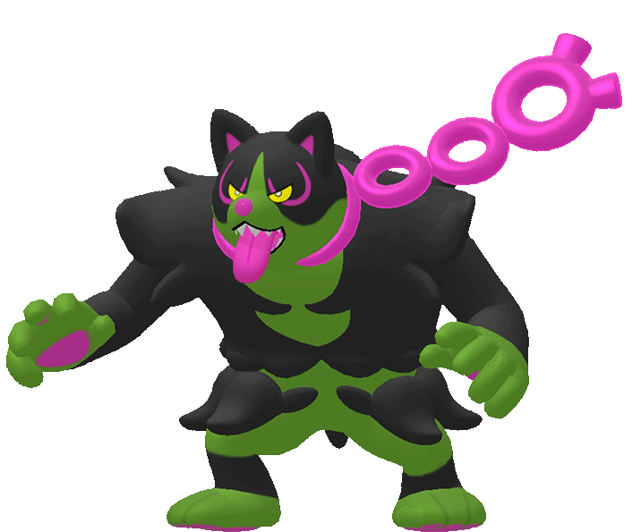
Poisoned, Okidogi hits for 260 or 300. Cured, it hits for 130.
What cures it. Leaving the Active Spot removes every Special Condition. Retreating cures it, and so does anything of theirs that moves your Active to the Bench: a Boss's Orders on one of your benched Pokémon, or Metagross's _Bounce Back_. A benched dog is never Poisoned, so one they drag up hits for 130 until it Musculatures.
What that costs. A cured Okidogi has to use Musculature again to get the Poison back. That is a turn, and it needs a Basic Darkness left in the deck. Energy Recycler is the refill.
The clock. Poisoned, the dog loses 20 HP a round to itself. Musculature the turn before it has a Knock Out to take, not three turns early. Three rounds of waiting in the Active Spot is 60 HP given away for nothing.
Retreat 3, and no Switch. There is no Switch card in this 60. Once Okidogi is in front, it usually stays until it wins or dies. Plan the Dragapult's turns around that.
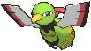
Their first two turns tell you which deck this is, and where the counters go.
| What they bench | Deck | Where the counters go | Your closer |
|---|---|---|---|
| Dreepy, Drakloak | Dragapult | Their Drakloaks, 90 each, or 2 on their benched Dragapult | Okidogi. Their Dragapult is 320, so 2 counters and a Boss is a Knock Out. |
| Dreepy plus Duskull | Dragapult Dusknoir | The Duskull, 60 HP, dead to one Dive | Okidogi into their Dragapult. Their 13 counters kill your Drakloaks, so keep two standing. |
| Slowpoke | Slowking | Slowpoke, then Slowking at 120 | Dragapult. One Dive kills Slowking; save the dog. |
| N's Zorua, N's Darmanitan | N's Zoroark | Zorua, 70 | Okidogi with the Mochi, 300 into 280. |
| Abra, Dunsparce | Alakazam Dudunsparce | Abra and Kadabra | Dragapult. Alakazam and Dudunsparce are 140 each. |
| Drilbur, Metal Energy | Mega Excadrill | 4 on the benched Mega, or 60 on a Drilbur | Okidogi after 4 counters. Count their Energy; at five, _Maximum Drilling_ kills either of yours. |
| Dhelmise, Shuppet, Poltchageist | Dhelmise | Nowhere. Hide 'n' Sneak blanks them. | Dragapult. Dhelmise is 140 and dies to one Dive. |
| Dwebble | Crustle | The benched Crustle, 15 counters over three Dives | Drakloak's _Dragon Headbutt_. See Versus the Ladder. |
| Riolu, Makuhita, Cynthia's Gible | Lucario Hariyama, Cynthia's Garchomp | Riolu 80, Makuhita 80, Cynthia's Gible 70 | Dragapult only. Okidogi is Fighting-weak and dies to anything they swing. |


The online field on Limitless, Standard with the 30th Celebration filter, as of 2026-09-28: 9,340 players across 147 tournaments. The win rate is each archetype's overall result on the ladder, not its record against this deck.
| Room | Share | Its ladder win rate | Key number |
|---|---|---|---|
| Dragapult, all three builds | 18.3% | 50-53% | 320 HP. Two counters, then Okidogi. Fairy Zone techs make your Dragons Psychic-weak, not your dog. |
| Slowking | 6.1% | 50.9% | 120 HP, single-prize. One Dive and counters a turn; Okidogi overkills. |
| N's Zoroark | 6.0% | 49.0% | 280 HP. Okidogi with the Mochi kills it. |
| Alakazam Dudunsparce | 5.9% | 49.5% | 140 HP each. One Dive kills either. |
| Mega Excadrill | 4.6% | 49.1% | 340 HP, hits 330 at five Energy. Four counters and a dog. |
| Dhelmise | 4.0% | 50.2% | 140 HP. The counters do nothing to Hide 'n' Sneak; the Dive does the work. |
| Lopunny Dudunsparce | 3.1% | 53.2% | Mega Lopunny ex is 330. Three counters and a dog. |
| Crustle | 2.7% | 51.6% | 150 HP and immune to damage from ex attacks. Both of your attackers are ex. |
| Lucario Hariyama | 2.2% | 46.5% | Okidogi is Fighting-weak. Dragapult carries the game. |
| Cynthia's Garchomp | 1.5% | 52.8% | 330 HP Fighting. Keep Okidogi benched; Dive, Dive. |
The good rooms are the 280 HP ex. N's Zoroark, Team Rocket's Mewtwo, Gengar ex, and Mega Absol all die to one Mochi'd _Chain-Crazed_, and every Mega up to 360 dies to it after one Dive. That is what Okidogi does that Steve's Clefairy package does not.
The hard room is Crustle. _Mysterious Rock Inn_ prevents all damage from attacks by Pokémon ex, and both attackers here are ex. What still works: Drakloak's _Dragon Headbutt_ for 70, Dreepy's _Bite_ for 40, and the Dive's counters on a benched Crustle, which are an effect and not damage. A 150 HP Crustle is three Headbutts or three Dives of counters. Take the Prizes off the rest of their board with Dragapult while Drakloak grinds the Crustle.
The Fighting rooms want the dog on the Bench. Lucario Hariyama and Cynthia's Garchomp double every attack into Okidogi. Dragapult has no Weakness, so it carries those games alone, and Okidogi comes out only to take a Knock Out on the last turn it will live.
The list is what I play; these are the things to watch as the games come in, and the change each one points at.
| Symptom | Cause | Fix |
|---|---|---|
| Mulligans, and the opponent getting free cards | 7 Basics is a 40% mulligan rate | A fourth Okidogi ex takes it to 35%. The third Poke Pad is the first cut. |
| Okidogi landing 260 when 300 was the Knock Out | One Binding Mochi, and it is a Tool nothing searches | A second Mochi. Tech Trainers go at 2 or 0. |
| The dog stuck in front after a cure | Retreat 3 and no Switch in the list | A Switch for the Energy Recycler, if the Darkness count is holding up. |
| No Dragapult by turn three | Candy prized or used, and the line thin | Hilda earlier, and Dawn over Lillie's on turn two. |
| Musculature whiffing | The Darkness went to Ultra Ball and the discard | Recycler on time. A sixth Darkness for a Fire if it keeps happening. |
| Losing to Crustle | Both attackers are ex | Nothing in the 60 answers it cleanly. Note the games and decide whether the room is big enough to tech for. |
| Dead hands full of Energy | Fifteen is a lot to draw | Play Recon before Lillie's, and let the Energy go to the bottom. |